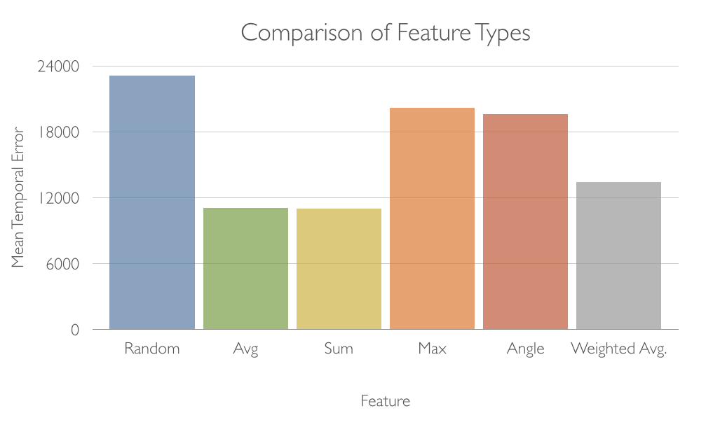

Soundpound is a data-driven approach to inferring which sounds should be played by an air-drummer. It was completed as the course project for CSCI 2951-B in Fall 2014. The system takes as input a video of a person playing the air-drums, and returns as output the same video annotated with drum sounds that are believed to be realistic. The key observation is that small segments of movement of an air drummer ought to appear similar to those of a real drummer.
The full system has four main steps:
The full pipeline is visualized as follows: Soundpound takes around two times longer two run than the length of the input video (i.e. for a 10 second video, the system will take around 20 seconds). The primary computational bottleneck is running optical flow and pooling. The dataset is all serialized in its featurized form, so it is extremely quick to load and search through.
The ENST-Drums data set was kindly provided by Olivier Gillet and Gael Richard. The full data set may be requested from them here. It includes approximately an hour of footage of three different drummers playing three different (and extremely varied) drum kits - some of the kits include peculiar percussive instruments such as cowbells, and others are equipped with extra toms and cymbals. The drummers are recorded playing each percussiion instrument with a few different sticks (e.g. mallets, brushes, etc.) from two different camera angles. For experimentation, the full dataset was not used due to the complexity of some of the sequences (i.e. fills, phrases). Here are some example images from the dataset:
The crux of the representation for each video consists of a vector field that results from applying Optical Flow to each pair of frames in the video. Optical flow boils down to computing a dense grid of keypoints for each frame and tracking the movement of those keypoints to the next frame. Thus, each frame is represented as a vector field representing how much each keypoint moved from the previous frame. The implementation that I used was the approach introduced by Gunnar Farneback in Image Analysis, 2003. For each frame, I performed a pooling operation across the vector field, reducing the representation for each frame down to a single integer value. Frames were then grouped into segments of N consecutive frames (results reported with N=25). This allows for the representation to capture changes in movement, such as downward motion followed immediately by abrupt backward motion. This was critical for achieving good results (with N=1 the Mean Temporal Error was effectively the same as random).
The different pooling functions considered were:


Where:

I processed a small subset of the full data into serialized feature representations using each of the above features, and compared the Mean Temporal Error on a held out set of data. This involved computing the inferred sound by running the full Soundpound system and compting the Error between the ground truth sound for the given video and the audio inferred by Soundpound.
As stated, this problem is fundamentally difficult to quantitatively evaluate. In order to evaluate the system, I rephrased the problem in terms of reidentifying the correct sound for an arbitrary video in the dataset. This allowed me to treat it like a standard machine learning problem, and break off a small chunk of the dataset for use as a test set. Then, using Soundpound, I approximated the correct drumming audio for a given input video and compared it to the ground truth audio. Unfortunately I was unable to find any existing distance metrics that were standard for audio (or sequences of integers, for that matter). I introduce the Mean Temporal Error metric for determining the distance between two sound waves:

The MTE effectively penalizes cases where the inferred sound incorrectly plays a drum sound, or incorrectly misses a drum sound. The setting of the parameter K is significant, then, as it is sensitive to the volume of the recording. Fortunately for this dataset, it was easy to pick a K (50) that achieved the desired cost function. Using the MTE, I was able to quantitatively evaluate the performance of my system:

I serialized the entire data set of videos in their featurized format. That is, I computed the Optical Flow of each video in the dataset, performed a pooling operation on the vector field, and grouped the frames into segments. Each segment was then stored in the dataset as its own entity (i.e. a single video was stored as several N-frame sequences). For the input video, the same processing was applied (Optical Flow + Pooling). Then, a simple nearest neighbor search for each segment identified the portions of other videos whose motions corresponded well to the given input segment's motion. The resulting sound is simply the stitched together sound of each matched segment.

The problem of inferring the correct sound is somewhat unconstrained, and is perhaps not well suited to data driven approaches. Some results are encouraging, though I suspect there are pure algorithmic approaches that could out-perform what I have put together here. Additinally, I discovered that there is a noticeable lack of distance metrics for time-series data. Much effort has been dedicated to distance metrics in language (i.e. Edit distance, Lewis Carrol's Word Ladder), as one might expect.